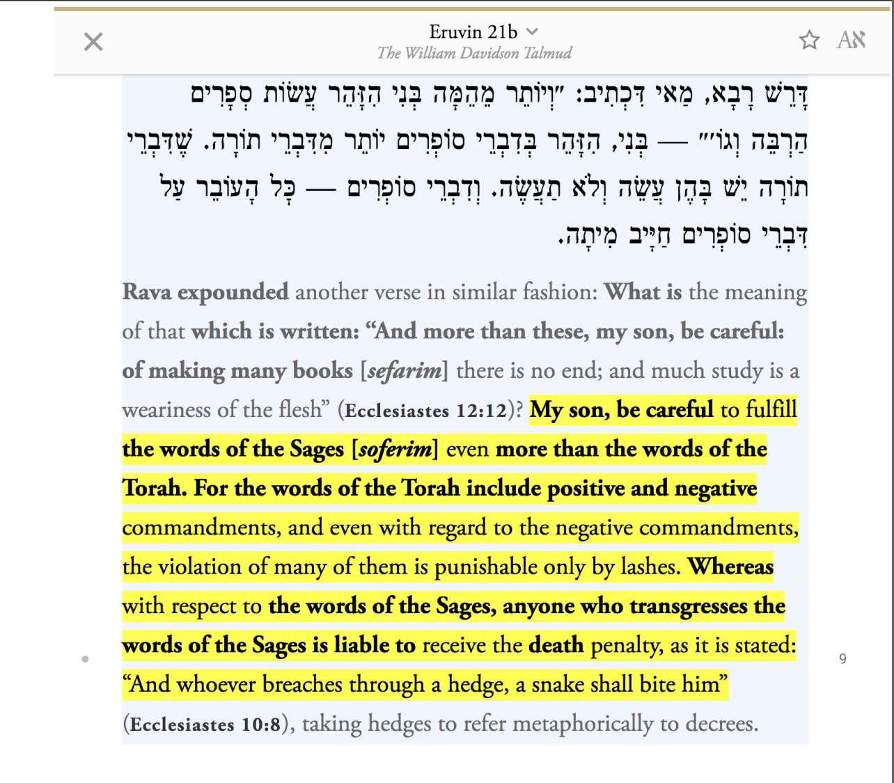

Taking Rabbis as lords beside Allah (see Quran 9:31)
https://m.youtube.com/watch?v=uRUeYdJL-yc&t=2s&pp=ygVdVGFsbXVkOiBSYWJiaW5pYyBDb21tYW5kcyBNb3JlIEltcG9ydGFudCBUaGFuIEdvZCdzIENvbW1hbmRzICYgSWYgdG8gRGlzb2JleSBTYWdlcyBZb3UgRGllISEh
https://m.youtube.com/watch?v=LVKqtNr3aBY&pp=ygUlVGFsbXVkOiBDaGFuZ2UgVGhlIEp1ZGdlbWVudCBvZiBBbGxhaA%3D%3D
https://m.youtube.com/watch?v=j10-pQUWo4g&pp=ygUvVGFsbXVkOiBRdWVzdGlvbmluZyB0aGUgU2FnZXMgTGFuZHMgWW91IEluIEhlbGw%3D
https://m.youtube.com/watch?v=MfP0Q8pQpP8

 Paganism and Kabbalah in Judaism
https://muslimskeptic.com/2021/09/16/rabbinic-paganism-the-profitable-nature-of-jewish-grave-worship/
https://muslimskeptic.com/2021/08/29/the-polytheism-in-judaism-expect-the-unexpected/
https://m.youtube.com/watch?v=R8l7AYoMXDk
The Shirk regarding the Sefirot
https://m.youtube.com/watch?v=B1CUQYulUcI&t=1367s
https://m.youtube.com/watch?v=UTRfYjyHG0s&pp=ygUVcHJvdmluZyBpc2xhbSBzZWZpcm90
https://m.youtube.com/watch?v=JykqRVciNqo&t=2s&pp=ygUVcHJvdmluZyBpc2xhbSBzZWZpcm90
Jews are God’s partners
https://m.youtube.com/watch?v=KlVi7zeXZGw
https://m.youtube.com/watch?v=K642xmAiVgs
Idol worship in Judaism
https://m.youtube.com/watch?v=SKKGlFgadmM
Paganism and Kabbalah in Judaism
https://muslimskeptic.com/2021/09/16/rabbinic-paganism-the-profitable-nature-of-jewish-grave-worship/
https://muslimskeptic.com/2021/08/29/the-polytheism-in-judaism-expect-the-unexpected/
https://m.youtube.com/watch?v=R8l7AYoMXDk
The Shirk regarding the Sefirot
https://m.youtube.com/watch?v=B1CUQYulUcI&t=1367s
https://m.youtube.com/watch?v=UTRfYjyHG0s&pp=ygUVcHJvdmluZyBpc2xhbSBzZWZpcm90
https://m.youtube.com/watch?v=JykqRVciNqo&t=2s&pp=ygUVcHJvdmluZyBpc2xhbSBzZWZpcm90
Jews are God’s partners
https://m.youtube.com/watch?v=KlVi7zeXZGw
https://m.youtube.com/watch?v=K642xmAiVgs
Idol worship in Judaism
https://m.youtube.com/watch?v=SKKGlFgadmM